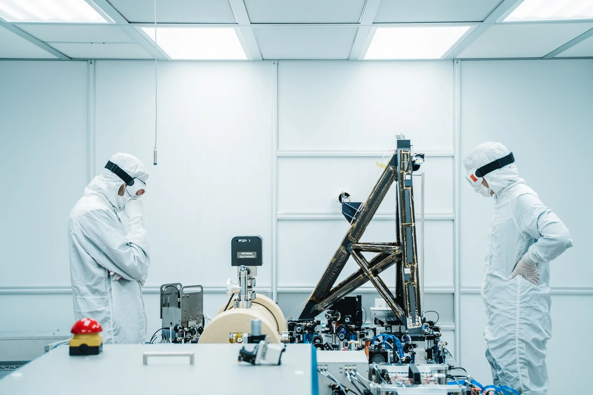

Oma kokeellinen tutkimus: suunnittelu, toteutus ja raportointi
Miksi kaksi ryhmää saa samalle leluautolle eri nopeuden, vaikka kumpikin mittaa huolellisesti?
Pohjatiedot
- Mittaustuloksella on epävarmuus. Kun mittaus toistetaan, saadaan keskiarvoluku Mittaaminen ja mittauksen luotettavuus
- Mittauspisteisiin sovitetaan suora. Suoran kulmakerroin kertoo muutoksen nopeudenluku Graafinen esitys ja suoran sovittaminen
Ydinpolku: tee vaiheet järjestyksessä. Ydinpolulla ei vain lasketa. Siinä myös tutkitaan, selitetään ja piirretään kuvaajia. Valinnainen-tehtävät ovat lisäharjoittelua. Valinnaisia tehtäviä on 5.
Luvun tärkeät käsitteet Vapaaehtoinen
Tutustu luvun tärkeisiin käsitteisiin. Voit kirjoittaa niiden merkitykset sinulle vahvimmalla kielellä tai useammalla kielellä.
- Tutkimus
- Järjestelmällinen tapa vastata kysymykseen mittaamalla.
- Hypoteesi
- Perusteltu ennuste tutkimuskysymykseen. Sen pitää olla sellainen, että mittaus voi osoittaa sen vääräksi.
- Muuttuja
- Suure, jonka arvo voi muuttua kokeessa. Yhtä muutetaan, toista mitataan ja muut pidetään samoina.
- Mittauspöytäkirja
- Muistiinpanot, jotka kirjoitetaan kokeen aikana: lukemat yksiköineen ja havainnot.
- Raportti
- Kirjallinen kuvaus tutkimuksesta niin, että toinen voi toistaa sen.
Pohdinta
Kaksi ryhmää mittaa saman leluauton nopeuden käsikellolla. Ryhmä A ajaa auton yhden kerran $0{,}50\,\text{m}$:n matkan. Ryhmä A saa ajaksi $1{,}0\,\text{s}$ ja laskee nopeudeksi $0{,}50\,\text{m/s}$. Ryhmä B ajaa viisi eri matkaa, kolme kertaa kutakin. Matkalla $2{,}00\,\text{m}$ keskiaika on $4{,}73\,\text{s}$, ja ryhmä B laskee nopeudeksi $0{,}42\,\text{m/s}$. Auto ja paristot ovat samat.
Miksi tulokset eroavat? Miten tutkimus pitäisi suunnitella, jotta sen tulokseen voi luottaa?
Valinnainen Kertaa: toistot ja epävarmuus
Ennusta
Tee ennusteet ennen tutkimista 1 kysymys
Ennuste: miksi tulokset eroavat
Tutki
Ryhmän B mittauspöytäkirja
Simuloitu esimerkkiaineisto
Ryhmä B ajoi autoa viidellä matkalla. Jokaisella matkalla ryhmä mittasi kolme aikaa käsikellolla. Taulukossa on aikojen keskiarvo $\bar{t}$, puolet vaihteluvälistä $\Delta t$, suhteellinen epävarmuus $\varepsilon = \Delta t : \bar{t}$ ja nopeus $v = s : \bar{t}$.
| $s\ (\text{m})$ | $t_1\ (\text{s})$ | $t_2\ (\text{s})$ | $t_3\ (\text{s})$ | $\bar{t}\ (\text{s})$ | $\Delta t\ (\text{s})$ | $\varepsilon$ | $v\ (\text{m/s})$ |
|---|---|---|---|---|---|---|---|
| 0,50 | 1,3 | 1,1 | 1,4 | 1,27 | 0,15 | $12\,\%$ | 0,39 |
| 1,00 | 2,5 | 2,3 | 2,6 | 2,47 | 0,15 | $6{,}1\,\%$ | 0,41 |
| 1,50 | 3,7 | 3,5 | 3,6 | 3,60 | 0,10 | $2{,}8\,\%$ | 0,42 |
| 2,00 | 4,9 | 4,6 | 4,7 | 4,73 | 0,15 | $3{,}2\,\%$ | 0,42 |
| 2,50 | 5,8 | 6,1 | 5,9 | 5,93 | 0,15 | $2{,}5\,\%$ | 0,42 |
Lisää tutkittavaa 2 tehtävää
Matka ajan funktiona
Simuloitu esimerkkiaineisto
Kuvaajassa ovat ryhmän B keskiajat ja matkat. Pisteiden vaakasuuntaiset janat ovat ajan epävarmuudet $\Delta t$. Kello käynnistetään, kun auto ohittaa lähtöviivan. Siksi hetkellä $t = 0$ matka on $s = 0$. Pisteisiin on sovitettu suora origon kautta (luku Graafinen esitys ja suoran sovittaminen). Matka on pystyakselilla, vaikka sitä muutettiin. Kulmakerroin $\Delta s : \Delta t$ vaatii, että aika on vaaka-akselilla.
Suora kulkee origon ja pisteen $(5{,}0\,\text{s}$; $2{,}1\,\text{m})$ kautta. Mikä on auton nopeus eli suoran kulmakerroin? Vastaa yksikössä m/s.
Vihje 1: ohjaava kysymys
Mitä kuvaajan kulmakerroin kertoo, kun vaaka-akselilla on aika ja pystyakselilla matka?
Vihje 2: mikä yhteys
Kulmakerroin on pystysuuntaisen muutoksen ja vaakasuuntaisen muutoksen suhde: $v = \dfrac{\Delta s}{\Delta t}$.
Vihje 3: välivaihe
Suora kulkee origon kautta, joten $\Delta s = 2{,}1\,\text{m} - 0\,\text{m}$ ja $\Delta t = 5{,}0\,\text{s} - 0\,\text{s}$.
Näytä ratkaisu
Annettu
suoran piste $(t, s) = (5{,}0\,\text{s}$; $2{,}1\,\text{m})$, ja suora kulkee origon $(0, 0)$ kautta
Kysytty
auton nopeus $v$ yksikössä $\text{m/s}$
Periaate
Auto liikkuu tasaisesti. Kello käynnistetään, kun auto ohittaa lähtöviivan, joten hetkellä $t = 0$ matka on $s = 0$. Siksi matka on suoraan verrannollinen aikaan, $s = vt$. Silloin $(t, s)$-kuvaajan suora kulkee origon kautta. Suoran kulmakerroin on nopeus.
Kuvaajan lukeminen
Luetaan suoralta piste, jonka koordinaatit tunnetaan tarkasti. Kun $t = 5{,}0\,\text{s}$, suora on korkeudella $s = 2{,}1\,\text{m}$. Toinen piste on origo. Kulmakerroin lasketaan näiden pisteiden välillä.
Kaava
Muunnokset
Matka on metreinä ja aika sekunteina, joten muunnoksia ei tarvita.
Sijoitus
Vastaus
$0{,}42\,\text{m/s}$
Kaksi merkitsevää numeroa. Syy: kuvaajalta luettu matka $2{,}1\,\text{m}$ voidaan lukea kahden numeron tarkkuudella.
Järkevyys
Tulos täsmää taulukon nopeuksiin $0{,}42\,\text{m/s}$ pidemmillä matkoilla. Kuvaajan viimeinen piste antaa $2{,}50\,\text{m} : 5{,}93\,\text{s} = 0{,}42\,\text{m/s}$. Suora kuvaa siis pisteitä hyvin.
Reilu koe?
Teoria
Ydinajatus
Fysiikka on kokeellinen tiede. Fysiikan väitteitä arvioidaan havaintojen ja mittausten avulla. Hyvässä tutkimuksessa menetelmät kerrotaan tarkasti. Silloin muut voivat tarkistaa tulokset ja usein myös toistaa mittaukset. Tutkimus on järjestelmällinen tapa vastata kysymykseen mittaamalla. Tutkimus alkaa kysymyksestä. Se päättyy johtopäätökseen, jonka mittaustulokset perustelevat. Hyvä tutkimus ei ole sellainen, jossa oletus osoittautuu oikeaksi. Hyvässä tutkimuksessa mittaus voisi näyttää oletuksen vääräksi.

Tutkimuskysymys ja hypoteesi
Tutkimuskysymys on kysymys, johon mittaus voi vastata. Esimerkki on "Miten leluauton kulkema matka riippuu ajasta?" Kysymys "Mikä auto on paras?" ei kelpaa, koska sitä ei voi mitata.
Hypoteesi on perusteltu ja testattava ennuste kysymykseen. Esimerkiksi: "Jos auto liikkuu vakionopeudella, kulkema matka on suoraan verrannollinen aikaan, $s = vt$." Hypoteesista pitää seurata jotain mitattavaa. Sen pitää myös voida osoittautua vääräksi. Ennuste "auto kulkee jotenkin" ei ole hypoteesi, koska mikään mittaus ei voi kumota sitä eli osoittaa sitä vääräksi.
Muuttujat
Muuttuja on suure, jonka arvo voi vaihdella tutkimuksessa. Kokeessa tehdään kolme asiaa. Yhtä muuttujaa muutetaan, toista mitataan ja kaikki muut pidetään samoina:
- muutettava muuttuja: kokeen tekijä valitsee sen arvot, tässä matka $s$
- mitattava muuttuja: sen arvo luetaan mittarista, tässä aika $t$
- vakioitavat muuttujat: ne pysyvät samoina koko kokeen ajan, tässä auto, paristot, alusta ja lähtötapa.
Joskus kaksi muuttujaa muuttuu yhtä aikaa, esimerkiksi matka ja paristot. Silloin ei voi päätellä, mikä muutti tulosta. Siksi koe on reilu vasta, kun vain muutettava muuttuja vaihtuu.
Suunnittelu ennen mittausta
Suunnitelma vastaa ennen mittausta näihin kysymyksiin:
- Mitä mitataan ja millä välineellä?
- Mitkä arvot muutettavalle muuttujalle valitaan, ja kuinka monta?
- Montako toistoa kustakin arvosta tehdään?
- Mitä pidetään vakiona?
Kokeile ensin esikokeella. Esikoe kertoo, onko mittaus ylipäätään mahdollinen. Se antaa myös karkean arvion tuloksesta.
Valitse mittausalue niin, että mitattava suure on selvästi suurempi kuin mittauksen epävarmuus (ks. kohta Suhteellinen epävarmuus ja mittausalueen valinta). Valitse useita arvoja ja pidä niiden välit yhtä suurina. Yksi tai kaksi pistettä ei näytä, onko riippuvuus suora.
Mittauspöytäkirja
Mittauspöytäkirja on kirjaus, joka tehdään kokeen aikana. Sitä ei tehdä muistista jälkikäteen. Siihen kirjataan nämä asiat:
- tutkimuskysymys ja päivämäärä
- välineet ja niiden tarkkuus
- vakioidut asiat
- mittaukset taulukkona yksiköineen
- havainnot, esimerkiksi "auto kääntyi sivuun".
Kirjaa lukemat sellaisenaan. Älä poista tai korjaa hiljaa mittausta, joka näyttää oudolta. Merkitse se ja kirjaa, mitä silloin tapahtui. Lyhyt esimerkki:
| $s\ (\text{m})$ | $t_1\ (\text{s})$ | $t_2\ (\text{s})$ | $t_3\ (\text{s})$ | huomio |
|---|---|---|---|---|
| 0,50 | 1,3 | 1,1 | 1,4 | vaikea ajoittaa |
| 1,00 | 2,5 | 2,3 | 2,6 | |
| 1,50 | 3,7 | 3,5 | 3,6 |
Raportti
Raportti kertoo tutkimuksen niin, että toinen voi toistaa sen. Toinen voi myös arvioida johtopäätöksen. Raportin osat ovat:
- tutkimuskysymys ja hypoteesi
- menetelmä: välineet, muuttujat ja toteutus
- tulokset: taulukko, kuvaaja ja suureen arvo epävarmuuksineen
- pohdinta: virhelähteet ja se, mitä seuraavalla kerralla tehtäisiin toisin
- johtopäätös: vastaus tutkimuskysymykseen ja se, tukevatko tulokset hypoteesia.
Johtopäätös on vain niin vahva kuin aineisto. Jos mittaukset osuvat epävarmuuden sisällä ennusteeseen, hypoteesi on saanut tukea. Sitä ei silti ole todistettu.
Suhteellinen epävarmuus ja mittausalueen valinta
Käsin mitatun ajan epävarmuus $\Delta t$ johtuu pääosin reaktioajasta. Se on lähes sama lyhyessä ja pitkässä mittauksessa. Siksi mittauksen laatua kuvaa suhteellinen epävarmuus. Se tarkoittaa epävarmuutta suhteessa mitattuun arvoon. Suhteellinen epävarmuus saa olla enintään $\varepsilon_\text{max}$. Silloin mitattavan ajan pitää olla vähintään
$$\begin{aligned} \varepsilon &= \frac{\Delta t}{t} \\ t &\ge \frac{\Delta t}{\varepsilon_\text{max}} \end{aligned}$$
missä $\varepsilon$ on suhteellinen epävarmuus (ilmoitetaan usein prosentteina), $\Delta t$ ajan epävarmuus (s) ja $t$ mitattu aika (s). Esimerkki: epävarmuus on $\Delta t = 0{,}2\,\text{s}$ ja raja on $5\,\%$. Silloin aikaa pitää olla vähintään $4\,\text{s}$.
Tarvittava matka saadaan tasaisen liikkeen mallista $s = vt$. Jos mittaus tehdään usealla matkalla, mittauspisteisiin sovitetaan suora (luku Graafinen esitys ja suoran sovittaminen). Aika $t$ on vaaka-akselilla ja matka $s$ pystyakselilla. Silloin suoran kulmakerroin on nopeus $v$. Lyhin kelvollinen matka on se, jolla suhteellinen epävarmuus vielä pysyy valitussa rajassa $\varepsilon_\text{max}$. Lyhyemmällä matkalla suhteellinen epävarmuus ylittää tämän rajan. Silloin tulos on liian epätarkka.
Yleinen virhekäsitys
Moni ajattelee, että tutkimus on epäonnistunut, jos mittaus ei tue hypoteesia. Näin ei ole. Jos mittaus kumoaa hypoteesin, tutkija tietää jotakin, mitä hän ei aiemmin tiennyt. Epäonnistunut tutkimus on sellainen, josta ei voi päätellä mitään. Silloin muuttujia ei ole hallittu tai mittaukset ovat liian epävarmoja.
Toinen yleinen virhe on pitää yhtä mittausta riittävänä. Yksi lukema ei kerro, kuinka paljon tulos vaihtelee. Siksi satunnaisvirheen aiheuttamaa hajontaa ei voi arvioida. Kolmas virhe on valita tulokseen sopivat mittaukset ja jättää muut pois. Kaikki mittaukset kirjataan, ja poikkeava mittaus selitetään tai merkitään.
Tiivistelmä
- Tutkimus alkaa kysymyksestä, jonka voi mitata. Siinä on myös hypoteesi, jonka voi testata ja joka voi osoittautua vääräksi.
- Reilussa kokeessa muutetaan yhtä muuttujaa, mitataan toista ja pidetään muut vakioina.
- Mittaus suunnitellaan etukäteen: mittausalue, pisteiden määrä, toistot ja vakioidut asiat. Esikoe tarkistaa suunnitelman.
- Pöytäkirjaan kirjataan lukemat, yksiköt, välineet ja havainnot kokeen aikana. Mitään mittausta ei poisteta hiljaa.
- Suhteellinen epävarmuus $\varepsilon = \Delta t : t$ pienenee, kun mitattava aika kasvaa. Siksi aikaa on oltava vähintään $\Delta t : \varepsilon_\text{max}$.
- Raportti kertoo kysymyksen, menetelmän, tulokset, pohdinnan ja johtopäätöksen. Näin toinen voi toistaa tutkimuksen.
Valinnainen Palaa ennusteeseesi
Vertaa ennustettasi ryhmän B pöytäkirjaan ja suhteellisen epävarmuuden kaavaan. Palaa sitten alun kysymykseen. Miksi ryhmän A ja ryhmän B tulokset eroavat? Miten tutkimus pitäisi suunnitella, jotta tulokseen voi luottaa?
Haluaisitko muuttaa ennustettasi?
Esimerkit
Kun olet lukenut teorian, tee ohjatut esimerkit. Ensin katsot mallilaskun vaihe vaiheelta. Sitten teet valinnat itse. Vihjeet auttavat, jos jäät jumiin.
Esimerkki 1: Leluauton nopeuden tutkimus
Oppilaat tutkivat leluauton liikettä. Esikokeessa auton nopeus on noin $0{,}42\,\text{m/s}$. Aika mitataan käsikellolla. Ajanoton epävarmuus on $\Delta t = 0{,}2\,\text{s}$. Mittauksen suhteellinen epävarmuus saa olla enintään $5{,}0\,\%$. Kuinka pitkä matka auton pitää vähintään kulkea?
Vaihe 1/7
Tunnetut ja kysytty. Nopeus $v = 0{,}42\,\text{m/s}$, ajan epävarmuus $\Delta t = 0{,}2\,\text{s}$ ja suurin sallittu suhteellinen epävarmuus $\varepsilon_\text{max} = 5{,}0\,\% = 0{,}050$. Kysytään lyhintä matkaa $s_\text{min}$.
Vaihe 2/7
Periaate. Mitattava aika kasvaa, ja silloin suhteellinen epävarmuus pienenee, koska $\Delta t$ pysyy samana. Lasketaan ensin lyhin sallittu aika epävarmuuden rajasta. Auto liikkuu vakionopeudella. Siksi tasaisen liikkeen malli $s = vt$ antaa ajasta matkan.
Vaihe 3/7
Kaava ratkaistuna. $$\begin{aligned} t_\text{min} &= \frac{\Delta t}{\varepsilon_\text{max}} \\ s_\text{min} &= v\, t_\text{min} = \frac{v\,\Delta t}{\varepsilon_\text{max}} \end{aligned}$$
Vaihe 4/7
Yksikkömuunnokset. Niitä ei tarvita. Nopeus on yksikössä $\text{m/s}$ ja aika sekunteina, joten matka tulee metreinä. Prosentti on muunnettu desimaaliluvuksi: $5{,}0\,\% = 0{,}050$.
Vaihe 5/7
Sijoitus. $$\begin{aligned} t_\text{min} &= \frac{\Delta t}{\varepsilon_\text{max}} \\ &= \frac{0{,}2\,\text{s}}{0{,}050} = 4\,\text{s} \\ s_\text{min} &= v\, t_\text{min} \\ &= 0{,}42\,\tfrac{\text{m}}{\text{s}} \cdot 4\,\text{s} \\ &= 1{,}68\,\text{m} \end{aligned}$$
Vaihe 6/7
Tulos. Matkan pitää olla vähintään $1{,}7\,\text{m}$. Tulos pyöristetään kahteen merkitsevään numeroon, kuten nopeus $0{,}42\,\text{m/s}$. Epävarmuus $0{,}2\,\text{s}$ on annettu yhdellä numerolla. Siksi se antaa vain arvion lyhimmästä ajasta.
Vaihe 7/7
Järkevyys. Matkalla $1{,}7\,\text{m}$ auton kulkuaika on noin $1{,}7\,\text{m} : 0{,}42\,\text{m/s} \approx 4{,}05\,\text{s}$. Silloin
eli tasan rajan sisällä. Matkalla $0{,}50\,\text{m}$ aika olisi vain $1{,}2\,\text{s}$ ja epävarmuus noin $17\,\%$. Siksi lyhyt matka oli huono valinta.
Valinnainen Esimerkki 2: Etsi virhe
Valinnainen Esimerkki 3: Sovella uuteen tilanteeseen
Oppilaat mittaavat käsikellolla kävelyvauhtia, noin $1{,}4\,\text{m/s}$. Ajan epävarmuus on $0{,}3\,\text{s}$, ja suhteellisen epävarmuuden pitää olla enintään $3{,}0\,\%$. Kuinka pitkä on lyhin kelvollinen mittausmatka? Vastaa metreinä.
Vihje 1: ohjaava kysymys
Mikä ajan pituus tekee suhteellisesta epävarmuudesta $3{,}0\,\%$, kun epävarmuus on $0{,}3\,\text{s}$?
Vihje 2: mikä yhteys
Lyhin aika on
Prosentti pitää sijoittaa desimaalilukuna. Matka saadaan mallista $s = vt$.
Vihje 3: välivaihe
ja $s = 1{,}4\,\text{m/s} \cdot 10\,\text{s}$.
Näytä ratkaisu
Annettu
nopeus $v = 1{,}4\,\text{m/s}$, ajan epävarmuus $\Delta t = 0{,}3\,\text{s}$, suhteellisen epävarmuuden raja $\varepsilon_\text{max} = 3{,}0\,\% = 0{,}030$
Kysytty
lyhin kelvollinen mittausmatka $s_\text{min}$ metreinä
Periaate
Ajanoton epävarmuus on sama pitkässä ja lyhyessä mittauksessa. Siksi suhteellinen epävarmuus pienenee, kun aika kasvaa. Kävely on likimain tasaista liikettä. Siksi matka saadaan mallista $s = vt$.
Kaava
Muunnokset
Prosentti muutetaan desimaaliluvuksi: $3{,}0\,\% = 0{,}030$. Muita muunnoksia ei tarvita. Aika on sekunteina ja nopeus yksikössä $\text{m/s}$.
Sijoitus
Vastaus
$14\,\text{m}$
Kaksi merkitsevää numeroa kuten nopeudessa ja rajassa.
Järkevyys
Kymmenen sekuntia on 33 kertaa epävarmuus $0{,}3\,\text{s}$, joten osuus on noin $\tfrac{1}{33} \approx 3{,}0\,\%$. Neljätoista metriä mahtuu koulun käytävälle tai pihalle. Koe on siis mahdollista tehdä.
Ydintehtävä
Esimerkki 4: Suunnittele oma tutkimus
Valitse jokin ilmiö, jota voit tutkia koulussa tai kotona. Ilmiön suureiden pitää olla mitattavissa. Esimerkkejä ovat kävelyn tai pallon vierimisen nopeus, veden jäähtyminen kupissa tai kumilenkin venyminen. Kirjoita suunnitelma. Siinä on nämä osat: tutkimuskysymys, hypoteesi, muutettava, mitattava ja vakioitavat muuttujat, mittausalue ja toistot sekä se, miten teet pöytäkirjan.
Mallivastaus
Tutkimuskysymys: miten pallon vierimiseen kuluva aika riippuu matkasta tasaisella lattialla? Pallo päästetään aina samasta kohdasta lyhyen lähtörampin yli. Aika alkaa, kun pallo ohittaa lattialle merkityn alkuviivan. Silloin vauhti on jo tasaantunut. Hypoteesi: jos pallon nopeus lattialla on likimain vakio, kulkuaika on suoraan verrannollinen matkaan, $s = vt$. Jos aika kasvaa matkaa nopeammin, hypoteesi on väärä. Muutettava muuttuja on matka alkuviivasta (esimerkiksi $1{,}6$–$3{,}2\,\text{m}$ viidellä tasavälisellä arvolla). Mitattava muuttuja on aika käsikellolla. Vakioidaan pallo, rampin korkeus ja lähtökohta, alusta sekä lähtötapa (pallo päästetään irti ilman työntöä). Esikokeessa pallon nopeus on noin $0{,}4\,\text{m/s}$. Oikea pallo hidastuu vierimisen aikana hieman vierimisvastuksen takia. Koe testaa siis myös sen, onko nopeus riittävän vakio. Ajanoton epävarmuus on noin $0{,}2\,\text{s}$. Lyhimmällä matkalla aikaa pitää siis olla vähintään $4\,\text{s}$, jotta suhteellinen epävarmuus pysyy enintään $5\,\%$. Matka $1{,}6\,\text{m}$ antaa ajan $4\,\text{s}$. Teen jokaisesta matkasta kolme toistoa. Kirjaan pöytäkirjaan jokaisen lukeman yksiköineen sekä havainnot, kuten ”pallo osui seinään”. Esikoe kertoo, onko matka riittävä.
Arvioi oma vastauksesi
Merkitse kohdat, jotka sinun vastauksessasi jo on.
Kertaa asia teoriasta ja harjoittele tehtävillä.
Toteuta oma tutkimus. Tee suunnitelmasi mukainen koe. Pidä mittauspöytäkirjaa paperilla tai taulukossa jo mittauksen aikana. Tee ensin esikoe, jolla tarkistat mittausalueen. Kirjoita sitten lyhyt raportti. Raportissa on viisi osaa: tutkimuskysymys ja hypoteesi, menetelmä, tulokset (taulukko ja kuvaaja), pohdinta ja johtopäätös. Tämän sivun tehtävät ovat harjoitus. Varsinainen tutkimus tehdään oikeilla välineillä.
Kertaa luvun käsitteet
Jos valitset Kertaa myöhemmin, kortti menee kertauspakkaasi.
- Tutkimuskysymys
- Täsmällinen kysymys, johon tutkimuksella pyritään vastaamaan.
- Koesuunnitelma
- Etukäteen laadittu kuvaus mittauksista, välineistä ja tutkimuksen toteutuksesta.
- Mittaussarja
- Samasta ilmiöstä järjestelmällisesti kerätty joukko mittaustuloksia.
- Toistettavuus
- Hyvin kuvattu koe voidaan tehdä uudelleen ja saada samansuuntaisia tuloksia.
- Mittausaineisto
- Kokeessa kerätyt arvot, havainnot, kuvat tai videot, joita analysoidaan.
- Tulosten analyysi
- Aineistoa käsitellään laskuilla ja kuvaajilla riippuvuuksien löytämiseksi.
- Johtopäätös
- Tuloksista tehty perusteltu vastaus tutkimuskysymykseen.
- Virhelähde
- Tekijä, joka voi aiheuttaa mittaustulokseen poikkeamaa tai epävarmuutta.
- Luotettavuus
- Arvio siitä, kuinka hyvin menetelmä ja tulokset tukevat tehtyä päätelmää.
- Tutkimusraportti
- Kirjallinen kuvaus tutkimuskysymyksestä, menetelmästä, tuloksista, johtopäätöksistä ja arvioinnista.
- Tiedonhankinta
- Luotettavan tiedon etsimistä esimerkiksi tutkimuksista, oppikirjoista, tietokannoista ja asiantuntijalähteistä.
- Tiedontuottaja
- Tahon tausta ja tarkoitus vaikuttavat siihen, miten sen julkaisemaa tietoa kannattaa arvioida.
- Lähdekritiikki
- Lähteen luotettavuutta arvioidaan tekijän, perustelujen, ajantasaisuuden ja muiden lähteiden avulla.
- Aineisto
- Tutkittava teksti, kuva, taulukko, kuvaaja tai muu tietolähde, josta tehdään päätelmiä.
- Objektiivisuus
- Tavoite kuvata havaintoja riippumatta tutkijan henkilökohtaisista mielipiteistä.
Tehtävät
Taso 1 · perusharjoitus 9 tehtävää
Yksi kaava tai yksi päättelyaskel. Tee ensin ydintehtävät. Loput ovat lisäharjoitusta.
- Tehtävä 8-1Ydintehtävä
Pallo vierii rinnettä alas. Oppilas mittaa sen kulkuajaksi käsikellolla $4{,}0\,\text{s}$. Ajanoton epävarmuus on $\Delta t = 0{,}2\,\text{s}$. Kuinka suuri on ajan suhteellinen epävarmuus $\varepsilon$ prosentteina?
Vastaus
$5\,\%$
Näytä ratkaisu
Annettu
mitattu aika $t = 4{,}0\,\text{s}$, ajanoton epävarmuus $\Delta t = 0{,}2\,\text{s}$
Kysytty
ajan suhteellinen epävarmuus $\varepsilon$ prosentteina
Periaate
Suhteellinen epävarmuus kertoo, kuinka suuri osa mittaustuloksesta on epävarmuutta. Se lasketaan jakamalla epävarmuus mitatulla arvolla.
Kaava
$\varepsilon = \dfrac{\Delta t}{t}$
Muunnokset
Sekä $\Delta t$ että $t$ ovat sekunteina, joten yksiköt supistuvat. Osamäärä kerrotaan sadalla prosenteiksi.
Sijoitus
$\varepsilon$$= \dfrac{0{,}2\,\text{s}}{4{,}0\,\text{s}}$$= 0{,}050$$= 5{,}0\,\%$Vastaus
$5\,\%$
Yksi merkitsevä numero kuten epävarmuudessa $0{,}2\,\text{s}$ (laskimen arvo $5{,}0\,\%$).
Järkevyys
Neljä sekuntia on 20 kertaa epävarmuus $0{,}2\,\text{s}$, joten epävarmuus on noin $\tfrac{1}{20} = 5\,\%$ mitatusta ajasta.
- Tehtävä 8-2
Oppilas kävelee kymmenen metrin matkan viisi kertaa. Hän mittaa ajat $12{,}3\,\text{s}$, $12{,}5\,\text{s}$, $12{,}2\,\text{s}$, $12{,}6\,\text{s}$ ja $12{,}4\,\text{s}$. Mikä on mittausten keskiarvo?
Vastaus
$12{,}4\,\text{s}$
Näytä ratkaisu
Annettu
viisi mittausta $12{,}3\,\text{s}$, $12{,}5\,\text{s}$, $12{,}2\,\text{s}$, $12{,}6\,\text{s}$ ja $12{,}4\,\text{s}$
Kysytty
mittausten keskiarvo $\bar{t}$ sekunteina
Periaate
Sattumanvaraiset ajanoton virheet menevät välillä yli ja välillä ali. Kun mittaus toistetaan, virheet kumoavat osin toisensa. Siksi keskiarvo on parempi arvio kuin yksi mittaus.
Kaava
$\bar{t}$$= \dfrac{t_1 + t_2 + t_3 + t_4 + t_5}{5}$Muunnokset
Kaikki ajat ovat jo sekunteina, joten muunnoksia ei tarvita.
Sijoitus
aikojen summa on $62{,}0\,\text{s}$, joten
$\bar{t}$$= \dfrac{62{,}0\,\text{s}}{5}$$= 12{,}4\,\text{s}$Vastaus
$12{,}4\,\text{s}$
Kolme merkitsevää numeroa kuten mittauksissa.
Järkevyys
Keskiarvo on pienimmän $12{,}2\,\text{s}$ ja suurimman $12{,}6\,\text{s}$ mittauksen välissä. Näin keskiarvon pitää olla. Se on myös keskimmäisen mittauksen $12{,}4\,\text{s}$ kohdalla, koska poikkeamat ovat melko symmetriset.
- Tehtävä 8-3
Leluauton merkitty ajomatka on $1{,}50\,\text{m}$. Auto kulkee sen ajassa $3{,}6\,\text{s}$. Mikä on auton nopeus? Oleta nopeus vakioksi ja vastaa yksikössä m/s.
Vastaus
$0{,}42\,\text{m/s}$
Näytä ratkaisu
Annettu
matka $s = 1{,}50\,\text{m}$, aika $t = 3{,}6\,\text{s}$
Kysytty
auton nopeus $v$ yksikössä $\text{m/s}$
Periaate
Auto liikkuu vakionopeudella. Siksi matka on suoraan verrannollinen aikaan: $s = vt$. Nopeus on matkan ja ajan suhde.
Kaava
$s = vt$, josta $v = \dfrac{s}{t}$
Muunnokset
Matka on metreinä ja aika sekunteina, joten tulos tulee suoraan yksikössä $\text{m/s}$.
Sijoitus
$v$$= \dfrac{1{,}50\,\text{m}}{3{,}6\,\text{s}}$$= 0{,}4167\,\text{m/s}$Vastaus
$0{,}42\,\text{m/s}$
Kaksi merkitsevää numeroa kuten ajassa $3{,}6\,\text{s}$.
Järkevyys
Tulos sopii tavalliselle leluautolle. Se on alle kolmasosa kävelyvauhdista ($1{,}4\,\text{m/s}$). Karkea tarkistus: $0{,}4\,\text{m/s} \cdot 3{,}6\,\text{s} \approx 1{,}4\,\text{m}$. Se on lähellä 1,5 metriä.
- Tehtävä 8-4
Pöydän pituus mitataan viisi kertaa viivoittimella: $24{,}1\,\text{cm}$, $24{,}4\,\text{cm}$, $24{,}0\,\text{cm}$, $24{,}3\,\text{cm}$ ja $24{,}2\,\text{cm}$. Epävarmuus arvioidaan puolena mittausten vaihteluvälistä. Kuinka suuri epävarmuus on?
Vastaus
$0{,}2\,\text{cm}$
Näytä ratkaisu
Annettu
viisi mittausta $24{,}1\,\text{cm}$, $24{,}4\,\text{cm}$, $24{,}0\,\text{cm}$, $24{,}3\,\text{cm}$ ja $24{,}2\,\text{cm}$
Kysytty
epävarmuus $\Delta x$ senttimetreinä
Periaate
Epävarmuus arvioidaan tässä yksinkertaisesti puolena vaihteluvälistä. Se kuvaa toistomittausten hajontaa keskiarvon ympärillä. Toistot eivät paljasta systemaattista virhettä.
Kaava
$\Delta x$$= \dfrac{x_\text{max} - x_\text{min}}{2}$Muunnokset
Kaikki pituudet ovat senttimetreinä, joten muunnoksia ei tarvita.
Sijoitus
$\Delta x$$= \dfrac{24{,}4\,\text{cm} - 24{,}0\,\text{cm}}{2}$$= \dfrac{0{,}4\,\text{cm}}{2}$$= 0{,}2\,\text{cm}$Vastaus
$0{,}2\,\text{cm}$
Yksi merkitsevä numero, koska epävarmuus ilmoitetaan yhdellä numerolla.
Järkevyys
Epävarmuus on kaksi millimetriä. Se sopii viivoittimella tehtyyn mittaukseen, jossa pienin asteikkoväli on millimetri. Mittausten suurin poikkeama keskiarvosta $24{,}2\,\text{cm}$ on $0{,}2\,\text{cm}$.
- Tehtävä 8-5
Mittauspöytäkirjan rivillä matka on $2{,}00\,\text{m}$. Kolmen ajan keskiarvo on $4{,}73\,\text{s}$. Puolet vaihteluvälistä on $\Delta t = 0{,}15\,\text{s}$. Kuinka suuri on ajan suhteellinen epävarmuus $\varepsilon$ prosentteina?
Vastaus
$3{,}2\,\%$
Näytä ratkaisu
Annettu
pöytäkirjan rivillä matka $s = 2{,}00\,\text{m}$, aikojen keskiarvo $\bar{t} = 4{,}73\,\text{s}$ ja puolet vaihteluvälistä $\Delta t = 0{,}15\,\text{s}$
Kysytty
ajan suhteellinen epävarmuus $\varepsilon$ prosentteina
Periaate
Suhteellinen epävarmuus kertoo, kuinka suuri osa mitatusta ajasta epävarmuus on. Se lasketaan jakamalla pöytäkirjaan kirjattu epävarmuus keskiajalla. Matkaa ei tarvita.
Kaava
$\varepsilon$$= \dfrac{\Delta t}{\bar{t}}$Muunnokset
Molemmat ajat ovat sekunteina, joten muunnoksia ei tarvita. Osamäärä kerrotaan sadalla prosenteiksi.
Sijoitus
$\varepsilon$$= \dfrac{0{,}15\,\text{s}}{4{,}73\,\text{s}}$$= 0{,}0317$$= 3{,}2\,\%$Vastaus
$3{,}2\,\%$
Kaksi merkitsevää numeroa kuten epävarmuudessa $0{,}15\,\text{s}$.
Järkevyys
Karkea arvio: $0{,}15 : 4{,}7$ on noin $0{,}03$, eli noin $3\,\%$. Tulos täsmää pöytäkirjan taulukon arvoon $3{,}2\,\%$. Se on alle $5\,\%$, joten matka $2{,}00\,\text{m}$ riittää.
- Tehtävä 8-6
Oppilas tutkii, miten veden lämpötila vaikuttaa siihen, kuinka kauan sokeripala liukenee. Hän laittaa saman kokoisia sokeripaloja samaan vesimäärään. Veden lämpötila on joka kerta eri. Hän mittaa, kuinka kauan palan liukeneminen kestää.
Mikä on tutkimuksen riippumaton (muutettava) muuttuja?
Vastaus
Veden lämpötila
Näytä ratkaisu
Kysytty
tutkimuksen riippumaton (muutettava) muuttuja.
Periaate
Riippumaton muuttuja on se, jota tutkija muuttaa tarkoituksella. Riippuva muuttuja on se, jota mitataan ja jonka odotetaan muuttuvan. Vakioitavat muuttujat pidetään samoina kaikissa mittauksissa. Silloin muutoksen voi yhdistää riippumattomaan muuttujaan.
Mallivastaus
Riippumaton muuttuja on veden lämpötila, koska oppilas valitsee sen itse. Riippuva muuttuja on sokeripalan liukenemisaika, jonka hän mittaa. Veden määrä ja sokeripalan koko vakioidaan eli pidetään samoina. Kello on mittalaite. Se ei ole tutkimuksen muuttuja.
- Tehtävä 8-7Ydintehtävä
Oppilaat haluavat tutkia heiluria koulun fysiikan tunnilla yksinkertaisella kokeella. Mikä seuraavista on hyvä tutkimuskysymys?
Vastaus
Miten heilurin langan pituus vaikuttaa heilahdusajan pituuteen?
Näytä ratkaisu
Kysytty
mikä esitetyistä kysymyksistä on hyvä tutkimuskysymys.
Periaate
Hyvä tutkimuskysymys on täsmällinen, ja siihen voi vastata mittaamalla. Siinä on yksi muutettava suure ja yksi mitattava suure. Koe pitää voida tehdä käytettävissä olevilla välineillä.
Mallivastaus
Hyvä kysymys on ”Miten heilurin langan pituus vaikuttaa heilahdusajan pituuteen?” Langan pituutta voi muuttaa, heilahdusajan voi mitata ja muut tekijät voi pitää samoina. Kysymykset ”Millainen heiluri on?” ja ”Miksi heiluri ylipäätään heiluu?” ovat yhdelle kokeelle liian epämääräisiä tai laajoja. Kysymys ”Onko heiluri kiva?” ei koske mitattavaa suuretta.
- Tehtävä 8-8
Työselostuksen kirjoittaja miettii, mihin osioon kukin lause kuuluu. Mikä seuraavista lauseista kuuluu selostuksen tulososioon eikä pohdintaan?
Vastaus
Viiden mittauksen keskiarvo oli $12{,}4\,\text{s}$ ja puolet vaihteluvälistä $0{,}2\,\text{s}$.
Näytä ratkaisu
Kysytty
mikä lause kuuluu tulososioon eikä pohdintaan.
Periaate
Tulososio kertoo, mitä mitattiin ja laskettiin: taulukot, kuvaajat, keskiarvot ja epävarmuudet. Pohdinta tulkitsee tuloksia. Siinä arvioidaan virhelähteitä ja luotettavuutta, otetaan kantaa hypoteesiin ja ehdotetaan jatkotutkimusta.
Mallivastaus
Tuloksiin kuuluu lause ”Viiden mittauksen keskiarvo oli $12{,}4\,\text{s}$ ja puolet vaihteluvälistä $0{,}2\,\text{s}$.” Se kertoo lasketut arvot ilman tulkintaa. Virhelähteen arviointi (reaktioaika), kanta hypoteesiin ja parannusehdotus (valokenno) ovat tulkintaa. Siksi ne kuuluvat pohdintaan.
- Tehtävä 8-9
Oppilaat tutkivat, riippuuko leluauton kulkuaika rampin alapäästä maaliviivalle auton massasta. He lisäävät autoon painoja ($0\,\text{g}$, $50\,\text{g}$ ja $100\,\text{g}$). He käyttävät samaa ramppia ja samaa matkaa. He mittaavat ajan käsikellolla, jonka epävarmuus on $\Delta t = 0{,}2\,\text{s}$. Päättele, mitkä väitteet tutkimussuunnitelmasta ovat tosia ja mitkä epätosia.
Vastaus
1 tosi, 2 epätosi, 3 epätosi, 4 tosi, 5 epätosi
Näytä ratkaisu
Kysytty
mitkä viidestä väitteestä tutkimussuunnitelmasta ovat tosia.
Periaate
Reilussa kokeessa muutetaan yhtä muuttujaa, mitataan toista ja pidetään muut vakioina. Mittaus toistetaan, jotta hajonta näkyy. Ero voidaan osoittaa vain, jos se ylittää epävarmuuden. Tulos, joka kumoaa hypoteesin, on silti tulos.
Mallivastaus
1 tosi: massa on muutettava muuttuja ja kulkuaika mitattava muuttuja. 2 epätosi: rampin kulma pitää vakioida, muuten ei tiedetä, kumpi muutos vaikutti aikaan. 3 epätosi: kellon näyttämä ei kerro käsin tehdyn ajanoton epävarmuutta $0{,}2\,\text{s}$. Yhdestä ajosta ei näe hajontaa, joten ajo toistetaan. 4 tosi: alle $0{,}2\,\text{s}$:n ero voi johtua pelkästä ajanotosta, joten eroa ei voi osoittaa. Tämä ei kuitenkaan todista, ettei vaikutusta ole. 5 epätosi: hypoteesin kumoutuminen on tutkimustulos. Epäonnistunut tutkimus on sellainen, josta ei voi päätellä mitään.
Taso 2 · soveltava harjoitus 7 tehtävää
Kaksi vaihetta, mittausaineiston käsittely, yksikkömuunnos tai kaavan ratkaiseminen. Tee ensin ydintehtävät. Loput ovat lisäharjoitusta.
- Tehtävä 8-10Ydintehtävä
Leluauton ajoaikaa mitataan viisi kertaa. Tulokset ovat $7{,}8\,\text{s}$, $8{,}2\,\text{s}$, $7{,}9\,\text{s}$, $8{,}1\,\text{s}$ ja $8{,}0\,\text{s}$. Epävarmuuden yksinkertainen ja varovainen arvio on puolet vaihteluvälistä. Kuinka suuri on tuloksen suhteellinen epävarmuus prosentteina?
Vastaus
$2{,}5\,\%$
Näytä ratkaisu
Annettu
viisi aikaa $7{,}8\,\text{s}$, $8{,}2\,\text{s}$, $7{,}9\,\text{s}$, $8{,}1\,\text{s}$ ja $8{,}0\,\text{s}$
Kysytty
tuloksen suhteellinen epävarmuus $\varepsilon$ prosentteina, kun epävarmuutena on puolet vaihteluvälistä
Periaate
Lasketaan ensin keskiarvo ja epävarmuuden yksinkertainen arvio, joka on puolet vaihteluvälistä. Suhteellinen epävarmuus on epävarmuus jaettuna keskiarvolla. Siksi se kertoo mittauksen laadun riippumatta yksiköstä.
Kaava
$\bar{t}$$= \dfrac{\sum t_i}{5}$$\Delta t$$= \dfrac{t_\text{max} - t_\text{min}}{2}$$\varepsilon$$= \dfrac{\Delta t}{\bar{t}}$Muunnokset
Kaikki ajat ovat sekunteina, joten muunnoksia ei tarvita. Osamäärä kerrotaan sadalla prosenteiksi.
Sijoitus
$\bar{t}$$= \dfrac{40{,}0\,\text{s}}{5}$$= 8{,}0\,\text{s}$$\Delta t$$= \dfrac{8{,}2\,\text{s} - 7{,}8\,\text{s}}{2}$$= 0{,}2\,\text{s}$joten
$\varepsilon$$= \dfrac{0{,}2\,\text{s}}{8{,}0\,\text{s}}$$= 0{,}025$$= 2{,}5\,\%$Vastaus
$2{,}5\,\%$
(laskimen arvo). Epävarmuus $0{,}2\,\text{s}$ on karkea arvio yhdellä numerolla. Siksi raportissa riittää pyöristää suhteellinen epävarmuus yhteen merkitsevään numeroon, noin $3\,\%$. Vastauskenttä hyväksyy kummankin.
Järkevyys
Kahdeksan sekuntia on 40 kertaa epävarmuus $0{,}2\,\text{s}$, joten osuus on noin $\tfrac{1}{40} = 2{,}5\,\%$. Se on pienempi kuin $4{,}0\,\text{s}$:n mittauksen $5{,}0\,\%$. Näin pitkällä ajalla kuuluukin olla.
- Tehtävä 8-11
Auto kulkee $3{,}0\,\text{m}$:n matkan vakionopeudella $1{,}5\,\text{m/s}$. Kulkuaika mitataan käsikellolla. Ajanoton epävarmuus on $0{,}20\,\text{s}$. Kuinka suuri on mitatun ajan suhteellinen epävarmuus prosentteina?
Vastaus
$10\,\%$
Näytä ratkaisu
Annettu
nopeus $v = 1{,}5\,\text{m/s}$, matka $s = 3{,}0\,\text{m}$, ajanoton epävarmuus $\Delta t = 0{,}20\,\text{s}$
Kysytty
ajan suhteellinen epävarmuus $\varepsilon$ prosentteina
Periaate
Auto liikkuu vakionopeudella. Siksi kulkuaika saadaan tasaisen liikkeen mallista $s = vt$. Sen jälkeen suhteellinen epävarmuus lasketaan jakamalla epävarmuus ajalla.
Kaava
$t$$= \dfrac{s}{v}$$\varepsilon$$= \dfrac{\Delta t}{t}$$= \dfrac{\Delta t\, v}{s}$Muunnokset
Matka on metreinä ja nopeus yksikössä $\text{m/s}$, joten aika saadaan sekunteina. Osamäärä kerrotaan sadalla prosenteiksi.
Sijoitus
$t$$= \dfrac{3{,}0\,\text{m}}{1{,}5\,\text{m/s}}$$= 2{,}0\,\text{s}$joten
$\varepsilon$$= \dfrac{0{,}20\,\text{s}}{2{,}0\,\text{s}}$$= 0{,}10$$= 10\,\%$Vastaus
$10\,\%$
Kaksi merkitsevää numeroa kuten matkassa ja nopeudessa.
Järkevyys
Kahden sekunnin mittauksessa reaktioajan $0{,}20\,\text{s}$ virhe on kymmenesosa kokonaisajasta. Tulos on kaksi kertaa suurempi kuin $5\,\%$, johon pitkä mittaus yltäisi. Siksi lyhyt matka on huono valinta.
- Tehtävä 8-12
Mittauspöytäkirjassa auton paikka on $90\,\text{cm}$, kun aikaa on kulunut $2{,}0\,\text{s}$. Kun aikaa on kulunut $8{,}0\,\text{s}$, paikka on $342\,\text{cm}$. Oleta liike tasaiseksi.
Mikä on auton nopeus? Vastaa yksikössä m/s.
Vastaus
$0{,}42\,\text{m/s}$
Näytä ratkaisu
Annettu
pisteet $(t_1, s_1) = (2{,}0\,\text{s}, 90\,\text{cm})$ ja $(t_2, s_2) = (8{,}0\,\text{s}, 342\,\text{cm})$
Kysytty
nopeus $v$ yksikössä $\text{m/s}$
Periaate
Liike on tasaista, joten matka muuttuu ajan mukana tasaisesti. Nopeus on matkan muutoksen ja ajan muutoksen suhde. Se on sama asia kuin kulmakerroin kahden pisteen välillä.
Kaava
$v$$= \dfrac{\Delta s}{\Delta t}$$= \dfrac{s_2 - s_1}{t_2 - t_1}$Muunnokset
Muutetaan matkat metreiksi: $90\,\text{cm} = 0{,}90\,\text{m}$ ja $342\,\text{cm} = 3{,}42\,\text{m}$.
Sijoitus
$v$$= \dfrac{3{,}42\,\text{m} - 0{,}90\,\text{m}}{8{,}0\,\text{s} - 2{,}0\,\text{s}}$$= \dfrac{2{,}52\,\text{m}}{6{,}0\,\text{s}}$$= 0{,}42\,\text{m/s}$Vastaus
$0{,}42\,\text{m/s}$
Kaksi merkitsevää numeroa, koska aikojen erotus $6{,}0\,\text{s}$ on annettu kahdella numerolla.
Järkevyys
Pisteiden välillä on kulunut $6{,}0\,\text{s}$, ja matka on kasvanut vajaat kolme metriä. Siksi nopeus on noin $\tfrac{2{,}5\,\text{m}}{6\,\text{s}} \approx 0{,}4\,\text{m/s}$. Suora leikkaa matka-akselin kohdassa
$s_0$$= 0{,}90\,\text{m} - 0{,}42\,\text{m/s} \cdot 2{,}0\,\text{s}$$\approx 0{,}06\,\text{m}$Suora kulkee siis lähes origon kautta.
- Tehtävä 8-13
Hypoteesin mukaan auton nopeus on $0{,}50\,\text{m/s}$. Kokeessa nopeudeksi mitataan $0{,}42\,\text{m/s}$. Kuinka monta prosenttia mitattu arvo poikkeaa hypoteesin ennustamasta arvosta?
Vastaus
$16\,\%$
Näytä ratkaisu
Annettu
hypoteesin ennustama nopeus $v_\text{enn} = 0{,}50\,\text{m/s}$, mitattu nopeus $v_\text{mit} = 0{,}42\,\text{m/s}$
Kysytty
mitatun arvon poikkeama ennustetusta prosentteina
Periaate
Hypoteesia testataan vertaamalla mittausta sen ennusteeseen. Poikkeama suhteutetaan ennusteeseen. Näin eroa voi verrata mittauksen epävarmuuteen riippumatta yksiköstä.
Kaava
$\delta$$= \dfrac{\left| v_\text{enn} - v_\text{mit} \right|}{v_\text{enn}}$Muunnokset
Kummatkin nopeudet ovat yksikössä $\text{m/s}$, joten yksiköt supistuvat. Osamäärä kerrotaan sadalla prosenteiksi.
Sijoitus
$\delta$$= \dfrac{\left| 0{,}50\,\text{m/s} - 0{,}42\,\text{m/s} \right|}{0{,}50\,\text{m/s}}$$= \dfrac{0{,}08}{0{,}50}$$= 0{,}16$$= 16\,\%$Vastaus
$16\,\%$
Kaksi merkitsevää numeroa kuten nopeuksissa.
Järkevyys
Mitattu nopeus on alle ennusteen. Ero $0{,}08\,\text{m/s}$ on noin kuudesosa ennusteesta ($\tfrac{1}{6} \approx 17\,\%$). Jos nopeuden epävarmuus olisi vain muutaman prosentin, ero olisi liian suuri sattumalle. Silloin hypoteesi olisi syytä hylätä tai tarkistaa.
- Tehtävä 8-14
Oppilas tutkii, vierivätkö kevyt ($50\,\text{g}$) ja raskas ($200\,\text{g}$) pallo saman rinteen alas yhtä nopeasti. Hän muuttaa vain massaa. Hän mittaa kummallakin pallolla viisi kulkuaikaa käsikellolla.
Hän päättelee: ”Raskas pallo on nopeampi, koska sen keskimääräinen aika on lyhyempi.”
Laske kummankin pallon aikojen keskiarvo ja epävarmuus (puolet vaihteluvälistä). Kuinka monta prosenttia keskiarvojen erotus on epävarmuudesta? Päättele lisäksi, tukeeko aineisto oppilaan päätelmää.
Pallon kulkuaika rinteessä Toisto $t_{50\,\text{g}}\,(\text{s})$ $t_{200\,\text{g}}\,(\text{s})$ 1 3,12 3,06 2 3,08 3,12 3 3,16 3,04 4 3,10 3,10 5 3,14 3,08 Vastaus
$100\,\%$
Näytä ratkaisu
Annettu
kevyen pallon ajat $3{,}12\,\text{s}$, $3{,}08\,\text{s}$, $3{,}16\,\text{s}$, $3{,}10\,\text{s}$ ja $3{,}14\,\text{s}$; raskaan pallon ajat $3{,}06\,\text{s}$, $3{,}12\,\text{s}$, $3{,}04\,\text{s}$, $3{,}10\,\text{s}$ ja $3{,}08\,\text{s}$
Kysytty
keskiarvojen erotus prosentteina epävarmuudesta sekä johtopäätös, tukeeko aineisto väitettä
Periaate
Kun vertaat kahden ryhmän keskiarvoja, vertaa eroa mittausten hajontaan. Hajonnan yksinkertaisena arviona käytetään tässä puolta vaihteluvälistä. Jos ero ei ole suurempi kuin hajonta ja välit menevät päällekkäin, eroa ei voi osoittaa.
Kaava
$\bar{t}$$= \dfrac{t_1 + \dots + t_5}{5}$$\;\Delta t$$= \dfrac{t_\text{max} - t_\text{min}}{2}$$\;\dfrac{|\bar{t}_{50} - \bar{t}_{200}|}{\Delta t} \cdot 100\,\%$
Muunnokset
Kaikki ajat ovat sekunteina, joten muunnoksia ei tarvita.
Sijoitus
Kevyen pallon aikojen summa on $15{,}60\,\text{s}$, joten
$\bar{t}_{50}$$= \dfrac{15{,}60\,\text{s}}{5}$$= 3{,}12\,\text{s}$$\Delta t_{50}$$= \dfrac{3{,}16\,\text{s} - 3{,}08\,\text{s}}{2}$$= 0{,}04\,\text{s}$Raskaan pallon summa on $15{,}40\,\text{s}$, joten
$\bar{t}_{200}$$= \dfrac{15{,}40\,\text{s}}{5}$$= 3{,}08\,\text{s}$$\Delta t_{200}$$= \dfrac{3{,}12\,\text{s} - 3{,}04\,\text{s}}{2}$$= 0{,}04\,\text{s}$Keskiarvojen erotus on $3{,}12\,\text{s} - 3{,}08\,\text{s} = 0{,}04\,\text{s}$, joten
$\dfrac{0{,}04\,\text{s}}{0{,}04\,\text{s}} \cdot 100\,\%$$= 100\,\%$Vastaus
$100\,\%$
Keskiarvojen erotus on yhtä suuri kuin epävarmuus. Välit $3{,}12\,\text{s} \pm 0{,}04\,\text{s}$ eli $3{,}08$–$3{,}16\,\text{s}$ ja $3{,}08\,\text{s} \pm 0{,}04\,\text{s}$ eli $3{,}04$–$3{,}12\,\text{s}$ menevät päällekkäin. Siksi aineisto ei tue väitettä ”raskas pallo on nopeampi”.
Järkevyys
Kevyen pallon ajat vaihtelevat välillä $3{,}08$–$3{,}16\,\text{s}$ ja raskaan pallon välillä $3{,}04$–$3{,}12\,\text{s}$. Välin $3{,}08$–$3{,}12\,\text{s}$ aikoja on kummallakin pallolla. Ero ei siis ole suurempi kuin yhden pallon oma vaihtelu. Tämä ei todista, ettei massalla ole vaikutusta. Eroa ei vain voi osoittaa näillä mittauksilla. Lisää toistoja ja tarkempi ajanotto voisivat näyttää, onko eroa.
- Tehtävä 8-15Ydintehtävä
Oppilas tutkii, vaikuttaako kärryn massa siihen, kuinka nopeasti kärry vierii rampin alas.
Hänen suunnitelmansa on: ”Päästän kevyen kärryn loivaa ramppia alas ja raskaan kärryn jyrkkää ramppia alas ja vertaan aikoja.” Mikä muutos korjaa suunnitelman?
Vastaus
Käytetään samaa rampin kulmaa molemmille kärryille ja muutetaan vain kärryn massaa.
Näytä ratkaisu
Kysytty
mikä muutos korjaa suunnitelman.
Periaate
Jotta aikojen eron voi yhdistää massaan, vain massa saa muuttua. Muut tekijät, kuten rampin kulma, pidetään samoina. Jos kaksi muuttujaa muuttuu yhtä aikaa, ero voi johtua kummasta tahansa.
Mallivastaus
Suunnitelma korjataan käyttämällä molemmille kärryille samaa rampin kulmaa ja muuttamalla vain kärryn massaa. Alkuperäisessä suunnitelmassa massa ja kulma vaihtuvat yhtä aikaa. Siksi ajan ero ei kerro, kumpi sen aiheutti. Toistot ja tarkempi kello pienentävät satunnaisvirhettä ja mittauksen epävarmuutta, mutta ne eivät korjaa tätä suunnitteluvirhettä. Entistä raskaampi kärry ja jyrkempi ramppi pahentaisivat sitä.
- Tehtävä 8-16
Oppilas mittaa leluauton paikan eri ajanhetkillä (taulukko). Hän piirtää kuvaajan, jossa matka $s$ on vaaka-akselilla ja aika $t$ pystyakselilla. Akseleille ei ole merkitty suureita eikä yksiköitä. Hän lukee sovitetun suoran kulmakertoimeksi $3{,}3$ ja ilmoittaa sen auton nopeudeksi.
Piirrä pisteisiin sovitettu suora oikein päin ($t$ vaaka-akselilla). Lue suoran kulmakerroin kahdesta suoran pisteestä, jotka ovat selvästi erillään. Mikä on auton nopeus? Vastaa yksikössä m/s ja selitä, mitä oppilaan luku $3{,}3$ oikeasti kuvaa.
Leluauton paikka $t\,(\text{s})$ $s\,(\text{m})$ 0,0 0,00 2,0 0,62 4,0 1,18 6,0 1,83 8,0 2,39 Vastaus
$0{,}30\,\text{m/s}$
Näytä ratkaisu
Annettu
taulukon pisteet $(t$; $s)$ = $(0{,}0\,\text{s}$; $0{,}00\,\text{m})$, $(2{,}0\,\text{s}$; $0{,}62\,\text{m})$, $(4{,}0\,\text{s}$; $1{,}18\,\text{m})$, $(6{,}0\,\text{s}$; $1{,}83\,\text{m})$, $(8{,}0\,\text{s}$; $2{,}39\,\text{m})$; oppilaan lukema kulmakerroin on $3{,}3$
Kysytty
auton nopeus $v$ yksikössä $\text{m/s}$ ja se, mitä luku $3{,}3$ kuvaa
Periaate
Tasaisessa liikkeessä $s = vt$. Kun aika on vaaka-akselilla ja matka pystyakselilla, suoran kulmakerroin on nopeus. Oppilas vaihtoi akselit. Kun matka on vaaka-akselilla, kulmakerroin on $\Delta t / \Delta s = 1/v$ eli nopeuden käänteisluku. Lisäksi akseleilta puuttuivat suureet ja yksiköt, joten luvulle $3{,}3$ ei voi antaa merkitystä.
Kuvaajan lukeminen
Pisteet ovat lähes suoralla, joka kulkee origon kautta. Sovitettu suora kulkee esimerkiksi pisteiden $(2{,}0\,\text{s}$; $0{,}60\,\text{m})$ ja $(8{,}0\,\text{s}$; $2{,}40\,\text{m})$ kautta. Kulmakerroin luetaan kahdesta suoran pisteestä, ei kahdesta vierekkäisestä mittauspisteestä.
Kaava
$v = \dfrac{s_2 - s_1}{t_2 - t_1}$
Muunnokset
Matka on metreinä ja aika sekunteina, joten muunnoksia ei tarvita.
Sijoitus
$v$$= \dfrac{2{,}40\,\text{m} - 0{,}60\,\text{m}}{8{,}0\,\text{s} - 2{,}0\,\text{s}}$$= \dfrac{1{,}80\,\text{m}}{6{,}0\,\text{s}}$$= 0{,}30\,\text{m/s}$Vastaus
$0{,}30\,\text{m/s}$
Kaksi merkitsevää numeroa kuten luetuissa pisteissä. Oppilaan luku $3{,}3$ on käänteisluku: $\dfrac{1}{0{,}30\,\text{m/s}} = 3{,}3\,\text{s/m}$. Oikein piirretyssä kuvaajassa $t$ on vaaka-akselilla ja $s$ pystyakselilla. Akseleilla ovat suure ja yksikkö, esimerkiksi $t\,(\text{s})$ ja $s\,(\text{m})$.
Järkevyys
Mittauspisteet kasvavat noin $0{,}6\,\text{m}$ joka kahden sekunnin välein, eli noin $0{,}3\,\text{m/s}$. Tulos on leluauton nopeuden luokkaa.
Taso 3 · haastava 5 tehtävää
Valinnaisia tehtäviä. Sovellat, yhdistät kaksi ideaa tai päättelet uudessa tilanteessa.
- Tehtävä 8-17
Oppilas sovittaa mittauspisteisiin (matka ajan funktiona) kaksi suoraa. Jyrkimmän suoran kulmakerroin on $0{,}463\,\text{m/s}$. Loivimman suoran kulmakerroin on $0{,}397\,\text{m/s}$. Mittauspisteet mahtuvat näiden suorien väliin. Epävarmuudeksi otetaan puolet suorien kulmakertoimien erotuksesta.
Kuinka suuri on nopeuden epävarmuus?
Vastaus
$0{,}033\,\text{m/s}$
Näytä ratkaisu
Annettu
jyrkimmän suoran kulmakerroin $v_\text{max} = 0{,}463\,\text{m/s}$, loivimman $v_\text{min} = 0{,}397\,\text{m/s}$
Kysytty
nopeuden epävarmuus $\Delta v$ yksikössä $\text{m/s}$
Periaate
Kaikki suorat, jotka sopivat mittauspisteisiin niiden epävarmuuksien rajoissa, ovat uskottavia. Siksi nopeus on todennäköisesti jyrkimmän ja loivimman suoran kulmakertoimien välillä. Paras arvio on niiden keskiarvo. Epävarmuus on puolet erotuksesta.
Kaava
$v$$= \dfrac{v_\text{max} + v_\text{min}}{2}$$\Delta v$$= \dfrac{v_\text{max} - v_\text{min}}{2}$Muunnokset
Kulmakertoimet ovat jo samassa yksikössä $\text{m/s}$, joten muunnoksia ei tarvita.
Sijoitus
$\Delta v$$= \dfrac{0{,}463\,\text{m/s} - 0{,}397\,\text{m/s}}{2}$$= \dfrac{0{,}066\,\text{m/s}}{2}$$= 0{,}033\,\text{m/s}$Vastaus
$0{,}033\,\text{m/s}$
(laskettu arvo). Erotus $0{,}066\,\text{m/s}$ on kahden numeron luku. Ilmoitettu epävarmuus pyöristetään yhteen merkitsevään numeroon, joten nopeus on $v = 0{,}43\,\text{m/s} \pm 0{,}03\,\text{m/s}$. Vastauskenttä hyväksyy kummankin.
Järkevyys
Epävarmuus on noin $\tfrac{0{,}033}{0{,}430} \approx 8\,\%$ nopeudesta. Se sopii käsikellolla mitatulle liikkeelle. Jos hypoteesi ennustaisi $0{,}50\,\text{m/s}$, ennuste olisi yli kaksi epävarmuutta mitattua arvoa suurempi. Väli on $0{,}397$–$0{,}463\,\text{m/s}$, eikä ennuste mahdu siihen.
- Tehtävä 8-18
Kuuma vesi jäähtyy kupissa. Lämpötila on $80{,}0\,{}^\circ\text{C}$ kohdassa $t = 0\,\text{min}$, $68{,}0\,{}^\circ\text{C}$ kohdassa $5{,}0\,\text{min}$, $52{,}0\,{}^\circ\text{C}$ kohdassa $15{,}0\,\text{min}$ ja $47{,}0\,{}^\circ\text{C}$ kohdassa $20{,}0\,\text{min}$.
Oppilaan hypoteesi on, että lämpötila laskee tasaisesti.
Laske lämpötilan laskunopeus ensimmäisen viiden minuutin aikana ja viimeisen viiden minuutin aikana. Kuinka paljon suurempi ensimmäinen laskunopeus on? Vastaa yksikössä K/min.
Vastaus
$1{,}4\,\text{K/min}$
Näytä ratkaisu
Annettu
lämpötilat $80{,}0\,{}^\circ\text{C}$ ajanhetkellä $0\,\text{min}$, $68{,}0\,{}^\circ\text{C}$ hetkellä $5{,}0\,\text{min}$, $52{,}0\,{}^\circ\text{C}$ hetkellä $15{,}0\,\text{min}$ ja $47{,}0\,{}^\circ\text{C}$ hetkellä $20{,}0\,\text{min}$
Kysytty
laskunopeuksien erotus ensimmäisen ja viimeisen viiden minuutin aikana yksikössä $\text{K/min}$
Periaate
Hypoteesi "lämpötila laskee tasaisesti" ennustaa saman laskunopeuden joka kohdassa. Siksi lasketaan laskunopeus kahdessa jaksossa ja verrataan niitä. Lämpötilan muutos on yhtä suuri kelvineinä ja celsiusasteina.
Kaava
$r$$= \dfrac{T_\text{alku} - T_\text{loppu}}{\Delta t}$$\Delta r = r_1 - r_2$
Muunnokset
Lämpötilan lasku celsiusasteina on yhtä suuri kuin kelvineinä, joten $1\,{}^\circ\text{C}$ muutos on $1\,\text{K}$ eikä muunnosta tarvita.
Sijoitus
$r_1$$= \dfrac{80{,}0\,{}^\circ\text{C} - 68{,}0\,{}^\circ\text{C}}{5{,}0\,\text{min}}$$= \dfrac{12{,}0\,\text{K}}{5{,}0\,\text{min}}$$= 2{,}4\,\text{K/min}$$r_2$$= \dfrac{52{,}0\,{}^\circ\text{C} - 47{,}0\,{}^\circ\text{C}}{5{,}0\,\text{min}}$$= \dfrac{5{,}0\,\text{K}}{5{,}0\,\text{min}}$$= 1{,}0\,\text{K/min}$joten
$\Delta r$$= 2{,}4\,\text{K/min} - 1{,}0\,\text{K/min}$$= 1{,}4\,\text{K/min}$Vastaus
$1{,}4\,\text{K/min}$
Kaksi merkitsevää numeroa, koska lämpötilojen erotukset ovat $12{,}0\,\text{K}$ ja $5{,}0\,\text{K}$.
Järkevyys
Ensimmäinen laskunopeus on yli kaksinkertainen viimeiseen verrattuna. Tämä ero ei voi johtua pelkästä lukemavirheestä $0{,}1\,\text{K}$. Hypoteesi tasaisesta laskusta ei siis päde. Lämpötila laskee sitä hitaammin, mitä lähempänä huoneen lämpötilaa vesi on.
- Tehtävä 8-19
Tutkimukseen on varattu 60 minuuttia. Laitteiden kasaamiseen ja testaamiseen menee 12 minuuttia. Mittaus tehdään kuudella eri matkalla. Jokainen mittaustoisto kestää 2,0 minuuttia. Tähän aikaan kuuluu myös palautus alkuun ja kirjaaminen. Jokaisella matkalla on yhtä monta toistoa.
Kuinka monta toistoa jokaiselle matkalle ehtii?
Vastaus
$4{,}0$
Näytä ratkaisu
Annettu
kokonaisaika $60\,\text{min}$, valmistelu $12\,\text{min}$, matkoja $N = 6$, yksi toisto $2{,}0\,\text{min}$
Kysytty
toistojen lukumäärä $n$ jokaista matkaa kohti
Periaate
Mittaukseen käytettävä aika on kokonaisaika miinus valmistelu. Se jaetaan tasan kaikkien toistojen kesken. Toistoja on $n$ jokaisella $N$ matkalla, ja jokainen toisto vie saman ajan.
Kaava
$t_\text{kok} - t_\text{val} = N\, n\, t_\text{toisto}$, josta
$n$$= \dfrac{t_\text{kok} - t_\text{val}}{N\, t_\text{toisto}}$Muunnokset
Kaikki ajat ovat minuutteina, joten muunnoksia ei tarvita.
Sijoitus
$n$$= \dfrac{60\,\text{min} - 12\,\text{min}}{6 \cdot 2{,}0\,\text{min}}$$= \dfrac{48\,\text{min}}{12\,\text{min}}$$= 4{,}0$Vastaus
$4{,}0$
Toistoa, kaksi merkitsevää numeroa kuten toiston kestossa. Toistojen määrän pitää olla kokonaisluku. Tässä tulos on tasan neljä.
Järkevyys
Neljä toistoa kuudella matkalla on 24 mittausta. Mittauksiin kuluu $24 \cdot 2{,}0\,\text{min} = 48\,\text{min}$. Kun siihen lisätään valmistelun $12\,\text{min}$, summa on $60\,\text{min}$. Aikaa ei jää hukkaan, eikä aika ylity.
- Tehtävä 8-20
Oppilas tutki, vaikuttaako pallon massa vierimisaikaan (vrt. kevyen ja raskaan pallon mittaukset). Viiden toiston keskiarvot ovat $\bar{t}_{50} = 3{,}12\,\text{s} \pm 0{,}04\,\text{s}$ ja $\bar{t}_{200} = 3{,}08\,\text{s} \pm 0{,}04\,\text{s}$ (epävarmuus on puolet vaihteluvälistä). Käsikellon ajanoton epävarmuudeksi arvioitiin yhdessä mittauksessa $0{,}15\,\text{s}$.
Pohdinnassa lukee: ”Koe onnistui hyvin. Raskaan pallon keskiarvo on pienempi, joten hypoteesi oli oikein. Virheitä oli vähän.”
Kuinka monta kertaa käsiajanoton epävarmuus $0{,}15\,\text{s}$ on keskiarvojen erotus? Perustele sen avulla ja tulosten väleillä, mitkä pohdinnan väitteet aineisto tukee ja mitkä ei. Kirjoita pohdintaan kaksi parempaa lausetta.
Kevyen ja raskaan pallon kulkuajan keskiarvot Pallo $\bar{t}\,(\text{s})$ $\Delta t\,(\text{s})$ $50\,\text{g}$ 3,12 0,04 $200\,\text{g}$ 3,08 0,04 Vastaus
$3{,}8$
Näytä ratkaisu
Annettu
$\bar{t}_{50} = 3{,}12\,\text{s} \pm 0{,}04\,\text{s}$, $\bar{t}_{200} = 3{,}08\,\text{s} \pm 0{,}04\,\text{s}$; käsiajanoton epävarmuus $\Delta t_\text{käsi} = 0{,}15\,\text{s}$; pohdinnan väitteet ”koe onnistui hyvin”, ”hypoteesi oli oikein” ja ”virheitä oli vähän”
Kysytty
kuinka monta kertaa $\Delta t_\text{käsi}$ on keskiarvojen erotus, ja mitkä väitteet aineisto tukee
Periaate
Pohdinnassa arvioidaan, mitä tulokset osoittavat ja kuinka luotettavia ne ovat. Väite on tuettu vain, jos ero on suurempi kuin epävarmuus eli jos epävarmuusvälit eivät mene päällekkäin. Koe ei todista hypoteesia varmaksi. Lausetta ”virheitä oli vähän” ei myöskään saa jättää ilman lukuja.
Kaava
$\Delta \bar{t} = \bar{t}_{50} - \bar{t}_{200}$ ja suhde
$k$$= \dfrac{\Delta t_\text{käsi}}{\Delta \bar{t}}$Muunnokset
Kaikki ajat ovat sekunteina, joten muunnoksia ei tarvita.
Sijoitus
$\Delta \bar{t}$$= 3{,}12\,\text{s} - 3{,}08\,\text{s}$$= 0{,}04\,\text{s}$joten
$k$$= \dfrac{0{,}15\,\text{s}}{0{,}04\,\text{s}}$$= 3{,}75$$\approx 3{,}8$Välit ovat $3{,}08$–$3{,}16\,\text{s}$ ja $3{,}04$–$3{,}12\,\text{s}$. Ne menevät päällekkäin välillä $3{,}08$–$3{,}12\,\text{s}$.
Vastaus
noin $3{,}8$ kertaa. Aineisto ei tue väitettä ”hypoteesi oli oikein”. Erotus $0{,}04\,\text{s}$ on yhtä suuri kuin epävarmuus $0{,}04\,\text{s}$, ja välit menevät päällekkäin. Pelkkä pienempi keskiarvo ei riitä. Väite ”virheitä oli vähän” ei myöskään pidä: käsiajanoton epävarmuus on moninkertainen eroon nähden. Väite ”koe onnistui hyvin” on liian vahva, koska koe ei pystynyt osoittamaan eroa. Parempia lauseita: ”Keskiarvojen erotus $0{,}04\,\text{s}$ on yhtä suuri kuin epävarmuus $0{,}04\,\text{s}$, joten aineisto ei osoita pallojen kulkuaikojen eroa. Tämä ei kuitenkaan todista, ettei massalla ole vaikutusta.” ja ”Käsiajanoton epävarmuus $0{,}15\,\text{s}$ on noin $3{,}8$-kertainen erotukseen nähden, joten jatkossa kannattaa käyttää valokennoa ja lisätä toistoja.”
Järkevyys
Käsikellon epävarmuus on moninkertainen mitattuun eroon nähden. Siksi pieni ero ($0{,}04\,\text{s}$, noin $1{,}3\,\%$ ajasta) ei erotu mittausvirheestä. Johtopäätös ”eroa ei voi osoittaa” on siksi sopivan varovainen. Poikkeavaa mittausta ei poistettu, eikä hypoteesia julistettu varmaksi.
- Tehtävä 8-21
Oppilas suunnittelee tutkimuksen kysymykseen ”Riippuuko veden jäähtymisnopeus astian materiaalista?” Hän kaataa yhtä monta desilitraa $80\,{}^\circ\text{C}$ vettä kolmeen samankokoiseen astiaan (lasi, metalli, muovi). Hän lukee lämpötilan joka minuutti. Riippumaton (muutettava) muuttuja on astian materiaali. Riippuva muuttuja on lämpötilan lasku.
Esikokeen lasiastian lämpötilat ovat taulukossa. Arvioi alun jäähtymisnopeus taulukon kolmen ensimmäisen minuutin muutoksesta. Lämpötilan laskun $\Delta T_\text{lasku}$ epävarmuudeksi arvioidaan $1{,}0\,\text{K}$. Laskun suhteellisen epävarmuuden halutaan olevan enintään $5{,}0\,\%$. Oleta, että hitaimmin jäähtyvässäkin astiassa alun nopeus on suunnilleen sama kuin lasiastiassa.
Kuinka pitkä mittausjakso vähintään pitää suunnitella? Nimeä lisäksi kolme vakioitavaa suuretta perusteluineen ja kerro, miten kolmen astian jäähtymiskäyriä verrataan.
Veden lämpötila lasiastiassa $t\,(\text{min})$ $T\,({}^\circ\text{C})$ 0,0 80,0 1,0 77,9 2,0 76,0 3,0 74,0 4,0 72,2 Vastaus
$10\,\text{min}$
Näytä ratkaisu
Annettu
esikokeen lämpötilat lasiastiassa: $80{,}0\,{}^\circ\text{C}$ hetkellä $0{,}0\,\text{min}$ ja $74{,}0\,{}^\circ\text{C}$ hetkellä $3{,}0\,\text{min}$; laskun epävarmuus $\Delta T_\text{lasku} = 1{,}0\,\text{K}$, suurin sallittu suhteellinen epävarmuus $\varepsilon_\text{max} = 5{,}0\,\%$
Kysytty
mittausjakson vähimmäispituus $t$ yksikössä $\text{min}$ sekä kolme vakioitavaa suuretta ja jäähtymiskäyrien vertailutapa
Periaate
Alun jäähtymisnopeus arvioidaan taulukon kolmen ensimmäisen minuutin muutoksesta. Suhteellinen epävarmuus pysyy rajassa vain, jos mitattu lasku on tarpeeksi suuri epävarmuuteen nähden. Sama pätee aikamittauksessa, jossa ajan epävarmuus on vakio. Ensin lasketaan pienin riittävä lasku. Sitten lasketaan aika, jossa vesi jäähtyy tämän verran alun nopeudella.
Kaava
$r$$= \dfrac{T_\text{alku} - T_3}{\Delta t}$$\;\varepsilon$$= \dfrac{\Delta T_\text{lasku}}{T_\text{lasku}}$$\le \varepsilon_\text{max}$josta
$T_\text{lasku}$$\ge \dfrac{\Delta T_\text{lasku}}{\varepsilon_\text{max}}$$t = \dfrac{T_\text{lasku}}{r}$
Muunnokset
Prosentti on sadasosa: $5{,}0\,\% = 0{,}050$. Lämpötilan lasku on sama kelvineinä ja celsiusasteina, joten $\text{K}$ sopii yksiköksi.
Sijoitus
$r$$= \dfrac{80{,}0\,{}^\circ\text{C} - 74{,}0\,{}^\circ\text{C}}{3{,}0\,\text{min}}$$= \dfrac{6{,}0\,\text{K}}{3{,}0\,\text{min}}$$= 2{,}0\,\text{K/min}$Sitten
$T_\text{lasku}$$\ge \dfrac{1{,}0\,\text{K}}{0{,}050}$$= 20\,\text{K}$joten
$t$$= \dfrac{20\,\text{K}}{2{,}0\,\text{K/min}}$$= 10\,\text{min}$Vastaus
vähintään $10\,\text{min}$, kaksi merkitsevää numeroa kuten annetuissa arvoissa. Vakioitavia suureita: vesimäärä (muuten lämpökapasiteetti ja pinta-ala muuttuvat), veden alkulämpötila (jäähtymisnopeus riippuu lämpötilaerosta huoneeseen) ja ympäristö eli huoneen lämpötila ja ilmavirta sekä se, onko astiassa kansi. Käyrät piirretään samaan kuvaajaan. Niitä verrataan alun kulmakertoimilla (laskunopeus samalla lämpötilan laskulla $\Delta T$, esimerkiksi ensimmäisen $20\,\text{K}$ laskun aikana) ja otetaan epävarmuus huomioon.
Järkevyys
Lämpötilan laskun pitää olla $20\,\text{K}$. Se on 20 kertaa epävarmuus $1{,}0\,\text{K}$, joten suhteellinen epävarmuus on $\tfrac{1}{20} = 5\,\%$. Todellisuudessa jäähtyminen hidastuu (vrt. aiempi jäähtymistehtävä), ja hitaimmin jäähtyvässä astiassa lasku on pienempi. Siksi $10\,\text{min}$ on alaraja: jakso kannattaa suunnitella pidemmäksi ja tarkistaa esikokeella.
Itsearvio
Arvioi lopuksi, osaatko luvun asiat. Jos vastaus on väärin, saat vinkin, mitä kerrata.
Arvioi, mitä opit
Nämä tavoitearviot tulevat mukaan luvun tehtävien palautukseen.
1. Pohdintatehtävä
Vastaa ensin itse. Avaa vastaus vasta sitten.
- Ajan epävarmuus on $0{,}2\,\text{s}$. Kuinka pitkä aika pitää vähintään mitata, jotta suhteellinen epävarmuus on enintään $2{,}0\,\%$?
Vastaus
$t$$\ge \dfrac{\Delta t}{\varepsilon_\text{max}}$$= \dfrac{0{,}2\,\text{s}}{0{,}020}$$= 10\,\text{s}$ - Mitä mittauspöytäkirjaan kirjataan, ja miksi epätavalliselta näyttävää mittausta ei poisteta hiljaa?
Vastaus
Pöytäkirjaan kirjataan tutkimuskysymys, päivämäärä, välineet ja tarkkuus, vakioidut asiat, lukemat yksiköineen ja havainnot. Selvästi poikkeava mittaus tarkistetaan, merkitään ja selitetään. Mittaus voidaan tarvittaessa toistaa. Tulosta ei poisteta pelkästään siksi, että se poikkeaa muista. Silloin tulos valittaisiin sopimaan odotukseen, eikä tutkimus enää testaisi hypoteesia. Jos tuloksen hylkää, se pitää perustella ja kirjata.
2. Käsitetehtävä
3. Käsitetehtävä: Muuttujat
4. Laskutehtävä: Epävarmuuden laskeminen
Oppilas mittaa kävelyajan viisi kertaa: $9{,}8\,\text{s}$, $10{,}2\,\text{s}$, $10{,}0\,\text{s}$, $9{,}9\,\text{s}$ ja $10{,}1\,\text{s}$. Tässä harjoituksessa epävarmuus arvioidaan yksinkertaisesti ja varovaisesti: se on puolet vaihteluvälistä.
Mikä on tuloksen suhteellinen epävarmuus prosentteina, kun epävarmuutena käytetään tätä arviota?
Vihje 1: ohjaava kysymys
Mikä on keskiarvo, ja mikä on suurin ja pienin lukema?
Vihje 2: mikä yhteys
Epävarmuus on
ja suhteellinen epävarmuus
Vihje 3: välivaihe
Näytä ratkaisu
Annettu
viisi aikaa $9{,}8\,\text{s}$, $10{,}2\,\text{s}$, $10{,}0\,\text{s}$, $9{,}9\,\text{s}$ ja $10{,}1\,\text{s}$
Kysytty
tuloksen suhteellinen epävarmuus $\varepsilon$ prosentteina, kun epävarmuutena on puolet vaihteluvälistä
Periaate
Toistoista saadaan keskiarvo. Lukemien hajontaa arvioidaan tässä yksinkertaisesti puolella vaihteluvälistä. Sitä käytetään epävarmuuden arviona. Suhteellinen epävarmuus on epävarmuus jaettuna keskiarvolla.
Kaava
Muunnokset
Kaikki ajat ovat sekunteina, joten muunnoksia ei tarvita. Osamäärä kerrotaan sadalla prosenteiksi.
Sijoitus
aikojen summa on $50{,}0\,\text{s}$, joten
joten
Vastaus
$2\,\%$
Yksi merkitsevä numero kuten epävarmuudessa $0{,}2\,\text{s}$ (laskimen arvo $2{,}0\,\%$).
Järkevyys
Kymmenen sekuntia on 50 kertaa epävarmuus $0{,}2\,\text{s}$, joten osuus on noin $\tfrac{1}{50} = 2\,\%$. Kaikki lukemat ovat keskiarvon $0{,}2\,\text{s}$:n sisällä, koska arvio kuvaa yksittäisten lukemien hajontaa. Keskiarvon oma epävarmuus on yleensä tätä pienempi. Siksi arvio on varovainen.
Ehdotus: yksi vastaus ei kerro kaikkea osaamisestasi. Kertaa asia teoriasta ja tee ydintehtävät.
Valinnainen 5. Selitystehtävä: Selitä johtopäätös
Oppilaan raportin johtopäätös on tämä: ”Hypoteesi todistettiin oikeaksi, koska mittaus antoi nopeuden $0{,}42\,\text{m/s}$ kuten ennustettiin.” Selitä, mikä väitteessä on liian vahvaa. Kerro myös, miten johtopäätös pitäisi muotoilla.
Mallivastaus
Yksi koe ei voi todistaa hypoteesia oikeaksi. Se voi antaa hypoteesille tukea, jos tulos osuu ennusteeseen epävarmuuden rajoissa. Se voi myös kumota hypoteesin. Johtopäätöksessä pitää olla tulos epävarmuuksineen, esimerkiksi $v = 0{,}42 \pm 0{,}02\,\text{m/s}$. Tulos pitää myös vertailla ennusteeseen: tulos sopii ennusteeseen, joten mittaus tukee hypoteesia. Lisäksi on kerrottava, millä ehdoilla tulos on saatu, esimerkiksi tietyllä autolla ja alustalla. On kerrottava myös, mitä jäi tutkimatta, kuten pidemmät matkat. Näin toinen voi arvioida, kuinka paljon johtopäätökseen voi luottaa.
Arvioi oma vastauksesi
Merkitse kohdat, jotka sinun vastauksessasi jo on.
Kertaa asia teoriasta ja harjoittele tehtävillä.